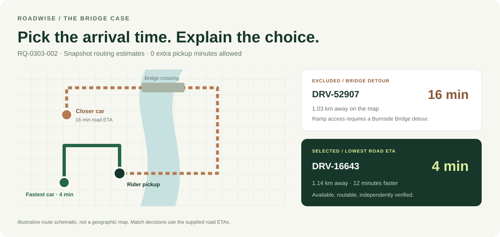

01 / THE PROBLEM
A close car can still arrive late.
Map distance misses one-way ramps, river crossings and unavailable drivers. Riders need the quickest usable pickup.
Choose by the road ahead. A two-node matching agent checks availability and road ETA, then explains every candidate decision.
*19 matched requests versus the nearest available car on this snapshot. Supplied estimates, not measured rider wait times.
01 / THE PROBLEM
Map distance misses one-way ramps, river crossings and unavailable drivers. Riders need the quickest usable pickup.
02 / THE APPROACH
Python filters status, route and pickup allowance before OpenRouter sees candidates. Code verifies the proposal against the minimum road ETA.
03 / THE PROOF
pytest checks the matching rules. Archived Langfuse traces retain the model call and candidate reasons. Inspect an actual trace below.
A 30-second walkthrough
Offline and on-trip drivers are removed first. Only available drivers with a usable route can compete.

Candidate review
| Driver | Status | Map distance | Road ETA | Decision | Why |
|---|
The shortest valid road ETA wins. Equal times use driver ID in ascending order.
Open the audit trail
Read an excerpt from this ride’s archived hosted Langfuse trace. These are recorded live-call fields, not a new call made by this page.
Loading recorded trace…
Try to break the rule
Toggle a driver’s status, edit a supplied ETA, or simulate a bad model proposal. The browser runs a small version of the deterministic policy. It does not run Python or call an LLM.
Blank ETA means no route. Zero minutes is valid. The default pickup allowance comes from the project configuration; map distance is shown for comparison only.
| Driver | Status | Map distance | Road ETA (min) |
|---|
Only these sandbox inputs change. Recorded request results and live-trace evidence above stay unchanged. Refreshing the page resets your edits; no scenario is uploaded.
What is implemented
Two LangGraph nodes, strict Pydantic state, three pre-model checks, OpenRouter proposals, deterministic fallback, FastAPI, hosted tracing, offline replay and GitHub Actions.
Read the implementation and testsWhat is still outside this demo
Road times come from a supplied snapshot. Live traffic routing, atomic driver reservation and deployment security would be needed for a real dispatch service. The public page provides recorded replay and a browser policy simulator; the Python API is available in the repository.